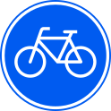

自転
車道
Verplicht fietspad
Dit verkeersbord geeft het begin van een verplicht fietspad aan. Fietsers en snorfietsers moeten hier op het fietspad rijden.
gemaakt door Michael Peek
自転
車道
Verplicht fietspad
Dit verkeersbord geeft het begin van een verplicht fietspad aan. Fietsers en snorfietsers moeten hier op het fietspad rijden.